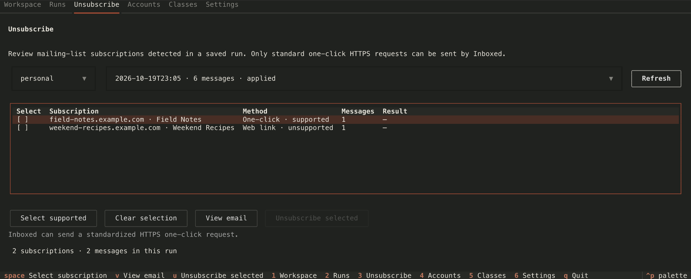

See what’s there.
Inboxed groups messages into your categories and prepares suggestions.
Too much mail. Too little headspace.
Sort the mail you want to keep. Clear what you don’t. Inboxed helps you review your inbox and stop unwanted subscriptions from filling it again.

A little room to breathe.
Nothing changes in your mailbox until you apply it.
Inboxed groups messages into your categories and prepares suggestions.
Read an email, change its category, and approve or deny the suggested actions.
Preview the changes, then move mail into folders, archive it, or send it to Trash.
A 77-second look at the workspace and command line.
Find mailing lists in a saved scan, read an example email, and confirm the unsubscribe requests you want to send.
Supports standard one-click unsubscribe. Other detected methods are shown with guidance.

Create classes that fit your inbox and choose where their messages go. Missing folders are created when you apply a move.
Opt classes into automation, set their confidence thresholds, and explicitly include automatic actions when applying changes.
Saved runs keep your decisions and activity logs on your computer. Add password protection for existing and future history.
Review mail in the TUI, or use the CLI for scans, dry runs, settings, and class management.
Scan, preview changes, and inspect your settings from the command line.
Open the CLI guide →$ inboxed scan --account personal --limit 50
✓ Scan complete · 50 messages saved
Your mailbox is unchanged.
$ inboxed apply 8f31b21a --dry-run
✓ Preview · 12 approved · 0 mailbox changes
$ inboxed settings
✓ Local model · credentials redactedExample session.
You’ll need Python 3.13+, uv, an IMAP account, and a compatible model running locally in Ollama. The setup guide walks through connecting your account and choosing a model.
Using Gmail with 2-Step Verification? Use an app password for IMAP.
Open the setup guide →git clone https://github.com/marvalkrystof/inboxed.git
cd inboxed
uv sync --extra tui
uv run inboxed init
uv run inboxed tuiThen configure your account in Accounts and your model in Settings.